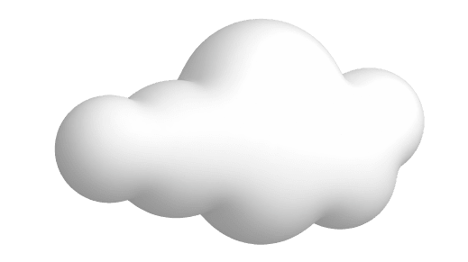

I earned my Bachelor of Science in Aerospace Engineering from the Georgia Institute of Technology in Fall 2023, following a strong academic foundation built at Kennesaw State University. My studies focused on propulsion and space systems engineering, and I developed deep technical knowledge in high-performance vehicle design, orbital mechanics, and fluid dynamics.
My academic career was defined by a hands-on approach to learning through team-based design challenges, lab projects, and systems integration coursework. These experiences shaped my collaborative mindset and sharpened my attention to detail—skills I now bring to real-world engineering projects.


I currently work as a Systems Engineer. I take pride in designing, evaluating, and supporting mission-critical systems that demand precision, safety, and innovation.
I’m passionate about advancing aerospace and defense technologies by combining systems thinking with practical engineering. My work includes developing procedures, refining test strategies, and engaging cross-functional teams to ensure every deliverable meets technical and operational standards.
When I'm not working on engineering problems, I enjoy snowboarding, fishing, building custom PCs, and exploring new technology trends. I also spend time programming passion projects and playing pickleball with friends. My hobbies often reflect the same curiosity and precision I bring to engineering.
Aug 2023 – Dec 2023
Led design of CubeSat communication and onboard data handling systems.
Ensured compliance with CubeSat standards and integration with avionics and subsystems. Collaborated with subsystem leads to develop and present mission plans using systems engineering principles—aligning stakeholders, meeting deadlines, and mitigating risks.
Tools: SolidWorks
Nov 2022 – Dec 2022
Analyzed jet engine performance options using MATLAB for a commercial airliner.
Compared ramjet, turbojet, and turbofan designs at subsonic conditions. Delivered final recommendations based on performance metrics and client criteria.
Tools: MATLAB
Jan 2021 – May 2021
Designed and launched rockets with iterative CAD simulations and real-world testing.
Refined geometry using SolidWorks, performed launch tests, and analyzed recovery dynamics and impact forces to improve future models.
Tools: MATLAB and SolidWorks